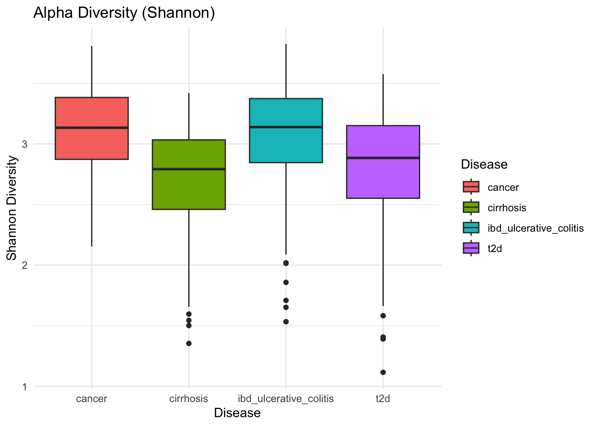
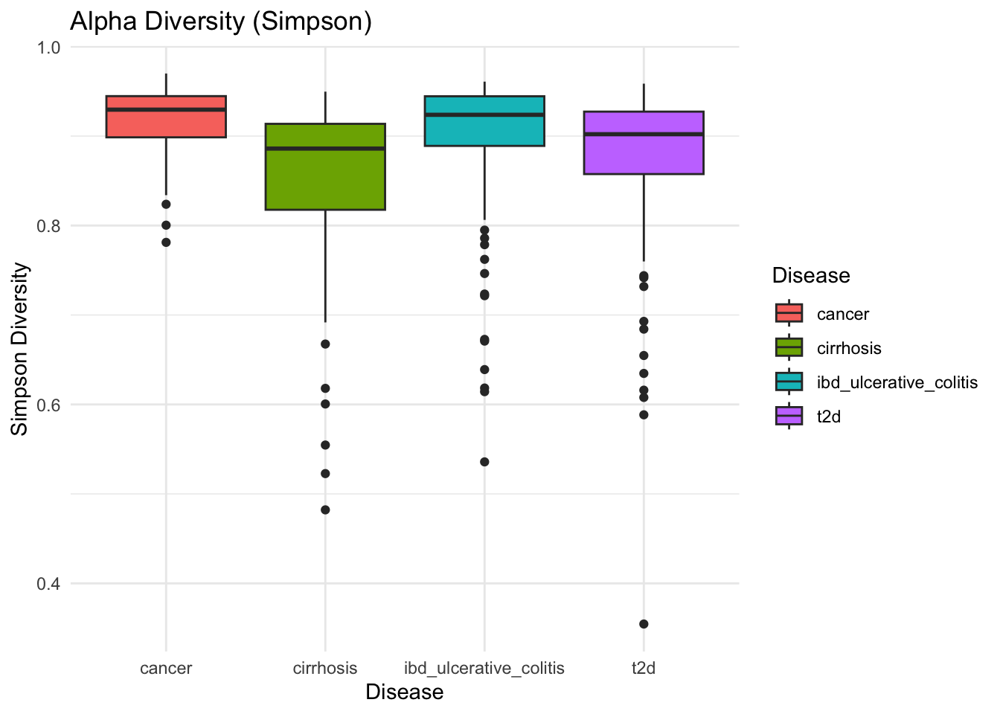
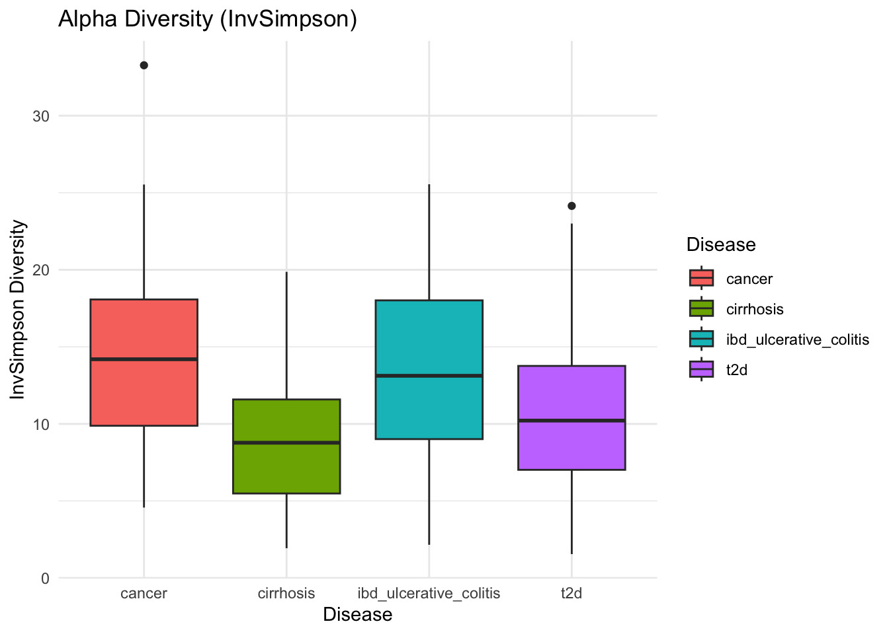
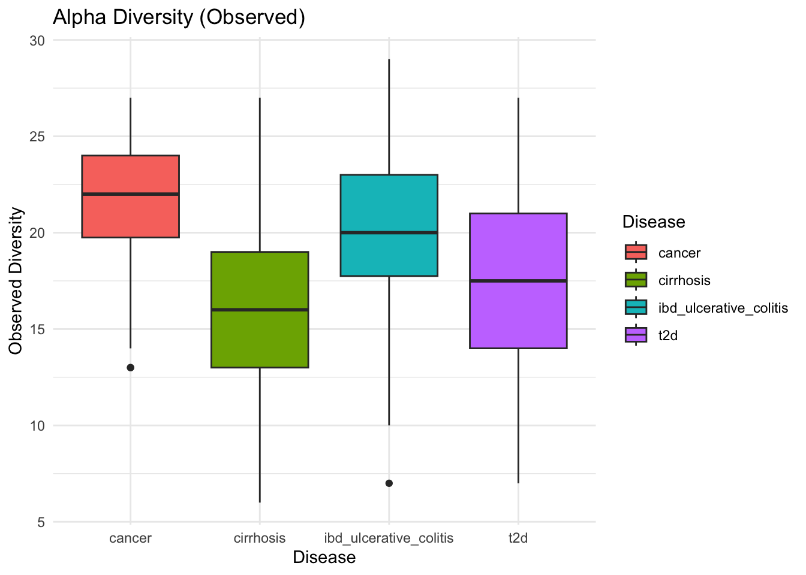

# import necessary librarieslibrary("phyloseq")library("ggplot2") # graphicslibrary("readxl") # necessary to import the data from Excel filelibrary("dplyr") # filter and reformat data frames
Attaching package: 'dplyr'
The following objects are masked from 'package:stats':
filter, lag
The following objects are masked from 'package:base':
intersect, setdiff, setequal, union
library("tibble") # Needed for converting column to row nameslibrary("readxl") # read excel filessetwd(dirname(getwd()))otu_mat<-read_excel("data/dataset_MISO_project.xlsx", sheet ="OTU_table")tax_mat<-read_excel("data/dataset_MISO_project.xlsx", sheet ="Taxonomy")samples_df <-read_excel("data/dataset_MISO_project.xlsx", sheet ="Sample_data")# Convert data frames to matrices and set row names. Phyloseq objects need to have row.namesotu_mat <- otu_mat %>% tibble::column_to_rownames("OTU_ID")tax_mat <- tax_mat %>% tibble::column_to_rownames("Tax_ID")samples_df <- samples_df %>% tibble::column_to_rownames("Sample_ID")#Transform into matrixes otu and tax tables (sample table can be left as data frame)otu_mat <-as.matrix(otu_mat)tax_mat <-as.matrix(tax_mat)# Transform to phyloseq objectsOTU =otu_table(otu_mat, taxa_are_rows =TRUE)TAX =tax_table(tax_mat)samples =sample_data(samples_df)metagenomics <-phyloseq(OTU, TAX, samples)metagenomics
phyloseq-class experiment-level object
otu_table() OTU Table: [ 640 taxa and 484 samples ]
sample_data() Sample Data: [ 484 samples by 8 sample variables ]
tax_table() Taxonomy Table: [ 640 taxa by 7 taxonomic ranks ]
country <- samples_df$countrycountry_count <-table(country)# Convert the table to a data frame for ggplotcountry_df <-as.data.frame(country_count)colnames(country_df) <-c("country", "count")p1 <-ggplot(country_df, aes(x = country, y = count)) +geom_col(fill ="blue") +labs(title ="Sample count by country", x ="country", y ="sample count")p1
Warning in asMethod(object): NAs introduced by coercion
Warning in asMethod(object): NAs introduced by coercion
Warning in asMethod(object): NAs introduced by coercion
Warning in asMethod(object): NAs introduced by coercion
Warning in asMethod(object): NAs introduced by coercion
Warning in asMethod(object): NAs introduced by coercion
p2 <-plot_bar(metagenomics_disease, fill ="Class") +geom_bar(aes(color=Class, fill=Class), stat="identity", position="stack") +labs(title ="Bacteria class distribution by diseases",x ="Disease",y ="Abundance", )
Warning: `aes_string()` was deprecated in ggplot2 3.0.0.
ℹ Please use tidy evaluation idioms with `aes()`.
ℹ See also `vignette("ggplot2-in-packages")` for more information.
ℹ The deprecated feature was likely used in the phyloseq package.
Please report the issue at <https://github.com/joey711/phyloseq/issues>.
p2
# save plots in a folder ggsave("figures/Preliminary/bar_graph_disease_Class.pdf", p1)
Warning in asMethod(object): NAs introduced by coercion
Warning in asMethod(object): NAs introduced by coercion
Warning in asMethod(object): NAs introduced by coercion
Warning in asMethod(object): NAs introduced by coercion
Warning in asMethod(object): NAs introduced by coercion
Warning in asMethod(object): NAs introduced by coercion
p3 <-plot_bar(metagenomics_country, fill ="Class") +geom_bar(aes(color=Class, fill=Class), stat="identity", position="stack") +labs(title ="Bacteria class distribution by country",x ="Country",y ="Abundance", )p3
Warning in asMethod(object): NAs introduced by coercion
Warning in asMethod(object): NAs introduced by coercion
Warning in asMethod(object): NAs introduced by coercion
Warning in asMethod(object): NAs introduced by coercion
Warning in asMethod(object): NAs introduced by coercion
Warning in asMethod(object): NAs introduced by coercion
p4 <-plot_bar(metagenomics_gender, fill ="Class") +geom_bar(aes(color=Class, fill=Class), stat="identity", position="stack") +labs(title ="Bacteria class distribution by gender",x ="Gender",y ="Abundance", )p4
# Count occurrences per country and diseasecounts <- samples_df %>%count(country, disease) # handles NA by default (drops them)# Create a bar plot (stacked)p5 <-ggplot(counts, aes(x = country, y = n, fill = disease)) +geom_col(position ="stack") +# stacked barslabs(title ="Disease counts by country",x ="Country",y ="Number of samples",fill ="Disease") +theme_minimal() +theme(axis.text.x =element_text(angle =45, hjust =1))p5
# Save the plotggsave("figures/Preliminary/disease_counts_by_country.pdf", p5)
Saving 7 x 5 in image
Transforming data
Relative Abundance
Data is already normalized with sample sums ~ 100
This is used for Shannon, Simpson and Inverse Simpson as they are robust to sequencing depth if using relative abundances.
Normalize sequencing depth - rarefaction
Rarefaction (random subsampling without replacement).
In microbial ecology and amplicon sequencing (e.g., 16S rRNA gene sequencing) where samples often have vastly different numbers of reads. Rarefying aims to make all samples have the same total number of reads by randomly drawing a subset of reads from each sample without replacement. The chosen target depth is usually the smallest library size among all samples, so that no sample is asked to provide more reads than it originally had. This is only used for observed alpha diversity as rarefaction ensures each sample contributes the same number of reads.
You set `rngseed` to FALSE. Make sure you've set & recorded
the random seed of your session for reproducibility.
See `?set.seed`
...
301OTUs were removed because they are no longer
present in any sample after random subsampling
...
metagenomics_rare
phyloseq-class experiment-level object
otu_table() OTU Table: [ 339 taxa and 484 samples ]
sample_data() Sample Data: [ 484 samples by 8 sample variables ]
tax_table() Taxonomy Table: [ 339 taxa by 7 taxonomic ranks ]
Calculate alpha diversity
When you click the Render button a document will be generated that includes both content and the output of embedded code. You can embed code like this:
Warning in estimate_richness(metagenomics, measures = c("Shannon", "Simpson", : The data you have provided does not have
any singletons. This is highly suspicious. Results of richness
estimates (for example) are probably unreliable, or wrong, if you have already
trimmed low-abundance taxa from the data.
We recommended that you find the un-trimmed data and retry.
p1 <-plot_richness(metagenomics, x ="disease", measures =c("Shannon", "Simpson", "InvSimpson"))
Warning in estimate_richness(physeq, split = TRUE, measures = measures): The data you have provided does not have
any singletons. This is highly suspicious. Results of richness
estimates (for example) are probably unreliable, or wrong, if you have already
trimmed low-abundance taxa from the data.
We recommended that you find the un-trimmed data and retry.
# Check Normality (Shapiro-Wilk) to decide test shapiro.test(alpha_df$Shannon)
Shapiro-Wilk normality test
data: alpha_df$Shannon
W = 0.94912, p-value = 7.577e-12
shapiro.test(alpha_df$Simpson)
Shapiro-Wilk normality test
data: alpha_df$Simpson
W = 0.75802, p-value < 2.2e-16
shapiro.test(alpha_df$InvSimpson)
Shapiro-Wilk normality test
data: alpha_df$InvSimpson
W = 0.97731, p-value = 7.625e-07
shapiro.test(alpha_df$Observed)
Shapiro-Wilk normality test
data: alpha_df$Observed
W = 0.98616, p-value = 0.0001463
If p-value > alpha 0.5, data is normal, use ANOVA. All test rejects the null hypothesis, so we use non-parametric test (Kruskal-Wallis).
kruskal.test(Shannon ~ Disease, data = alpha_df)
Kruskal-Wallis rank sum test
data: Shannon by Disease
Kruskal-Wallis chi-squared = 65.355, df = 3, p-value = 4.212e-14
kruskal.test(Observed ~ Disease, data = alpha_df)
Kruskal-Wallis rank sum test
data: Observed by Disease
Kruskal-Wallis chi-squared = 61.542, df = 3, p-value = 2.753e-13
kruskal.test(Simpson ~ Disease, data = alpha_df)
Kruskal-Wallis rank sum test
data: Simpson by Disease
Kruskal-Wallis chi-squared = 57.58, df = 3, p-value = 1.932e-12
kruskal.test(InvSimpson ~ Disease, data = alpha_df)
Kruskal-Wallis rank sum test
data: InvSimpson by Disease
Kruskal-Wallis chi-squared = 57.58, df = 3, p-value = 1.932e-12
Alpha Diversity Visualization
p3 <-ggplot(alpha_df, aes(x = Disease, y = Shannon, fill = Disease)) +geom_boxplot() +theme_minimal() +ylab("Shannon Diversity") +xlab("Disease") +ggtitle("Alpha Diversity (Shannon)")ggsave("figures/Alpha/alpha_boxplot_shannon.pdf", p3)
Saving 7 x 5 in image
p3

p4 <-ggplot(alpha_df, aes(x = Disease, y = Simpson, fill = Disease)) +geom_boxplot() +theme_minimal() +ylab("Simpson Diversity") +xlab("Disease") +ggtitle("Alpha Diversity (Simpson)")ggsave("figures/Alpha/alpha_boxplot_simpson.pdf", p4)
Saving 7 x 5 in image
p4

p5 <-ggplot(alpha_df, aes(x = Disease, y = InvSimpson, fill = Disease)) +geom_boxplot() +theme_minimal() +ylab("InvSimpson Diversity") +xlab("Disease") +ggtitle("Alpha Diversity (InvSimpson)")ggsave("figures/Alpha/alpha_boxplot_InvSimpson.pdf", p5)
Saving 7 x 5 in image
p5

p6 <-ggplot(alpha_df, aes(x = Disease, y = Observed, fill = Disease)) +geom_boxplot() +theme_minimal() +ylab("Observed Diversity") +xlab("Disease") +ggtitle("Alpha Diversity (Observed)")ggsave("figures/Alpha/alpha_boxplot_Observed.pdf", p6)
Saving 7 x 5 in image
p6

Post-Hoc
Since Kruskal-Wallis tells you there’s a difference somewhere among the groups, we may want to do post-hoc pairwise comparisons to see which groups differ. For non-parametric tests, we can use:
library(FSA)
## FSA v0.10.1. See citation('FSA') if used in publication.
## Run fishR() for related website and fishR('IFAR') for related book.
# Pairwise Wilcoxon test with p-value adjustmentpairwise.wilcox.test(alpha_df$Observed, alpha_df$Disease, p.adjust.method ="BH")
Pairwise comparisons using Wilcoxon rank sum test with continuity correction
data: alpha_df$Observed and alpha_df$Disease
cancer cirrhosis ibd_ulcerative_colitis
cirrhosis 2.1e-08 - -
ibd_ulcerative_colitis 0.076 2.0e-08 -
t2d 5.2e-07 0.105 1.4e-06
P value adjustment method: BH
Pairwise comparisons using Wilcoxon rank sum test with continuity correction
data: alpha_df$Simpson and alpha_df$Disease
cancer cirrhosis ibd_ulcerative_colitis
cirrhosis 1.3e-06 - -
ibd_ulcerative_colitis 0.80457 4.6e-10 -
t2d 0.00037 0.01071 2.8e-06
P value adjustment method: BH
Pairwise comparisons using Wilcoxon rank sum test with continuity correction
data: alpha_df$InvSimpson and alpha_df$Disease
cancer cirrhosis ibd_ulcerative_colitis
cirrhosis 1.3e-06 - -
ibd_ulcerative_colitis 0.80457 4.6e-10 -
t2d 0.00037 0.01071 2.8e-06
P value adjustment method: BH
Pairwise comparisons using Wilcoxon rank sum test with continuity correction
data: alpha_df$Shannon and alpha_df$Disease
cancer cirrhosis ibd_ulcerative_colitis
cirrhosis 9.1e-08 - -
ibd_ulcerative_colitis 0.689 1.1e-10 -
t2d 2.6e-05 0.046 1.6e-07
P value adjustment method: BH